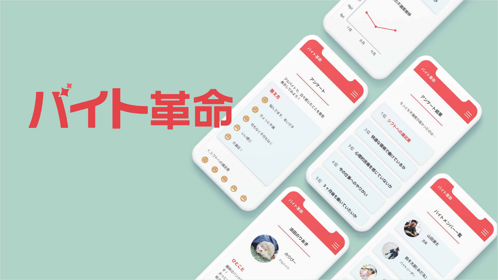

バイト革命
UI/UXデザイン
コンセプト
こっそり店長に改善を提案できるWebサービス
『バイト革命』は、アルバイト内で定期的に匿名のアンケートを実施できるサービスです。口頭でなくWeb上でバイトの悩みを打ち明けられることで、アルバイトの働きやすさ向上を目指しました。
プロダクトの目的・ゴール状態
アルバイトにとって働きやすい環境づくりの第一歩として、アルバイトが意思表示をしやすい空気を作る
ユーザーインタビューで、「バイトでの悩みがない」と答えた人は、職場での会話や相談などのやりとりが活発だと回答しました。 そこで、良い職場では
- コミュニケーションが活発
- 悩み相談ができるほど信頼関係が築けている
のではないかと考え、意思表示のハードルを下げることで少しでも職場環境がこの状態に近付くようなサービスを作る！ということがチーム全体の共通認識になりました。
ゴールに導くためのソリューション
①アンケート機能
月二回、アルバイトがバイトに関する悩みに関するアンケートに匿名で答える。
- シフトへの満足度
- 今の仕事へのやりがい
- 快適な環境で働けているか
- 心理的苦痛を感じていないか
- ３ヶ月後も働いていたいか
②不満が多かったランキング
質問項目で不満の多かった順にランキングが表示される。ポイント数の変動がグラフ形式で閲覧できる。アルバイト学生はどんな悩みを抱えているのか？また、悩みに変化の兆しはあるか？が可視化できる。
| 制作人数 | 5人（デザイナー1:エンジニア４） |
|---|---|
| 担当領域 | デザイン（AdobeXDでプロトタイプ作成） |
| 制作期間 | 三日間（アイデア出し〜成果発表まで） |
| 制作環境 | Adobe XD,Illustrator |
| 制作物 | XDプロトタイププレビューはこちら |